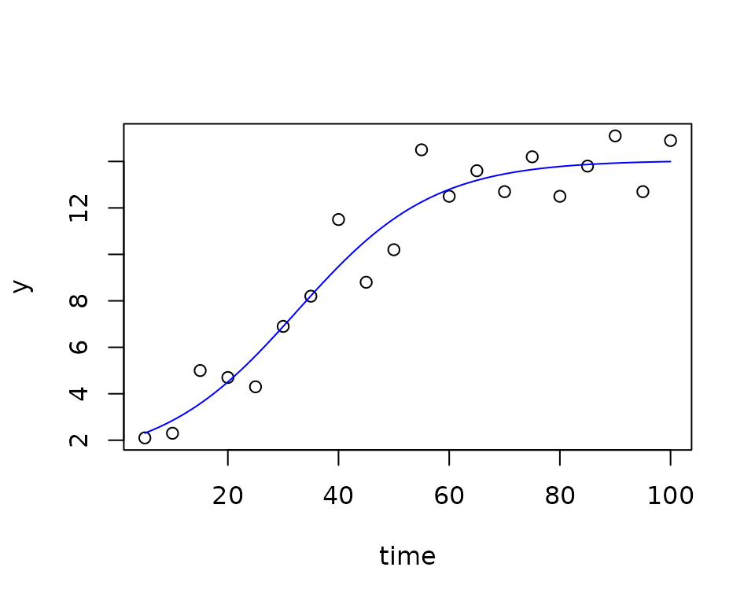
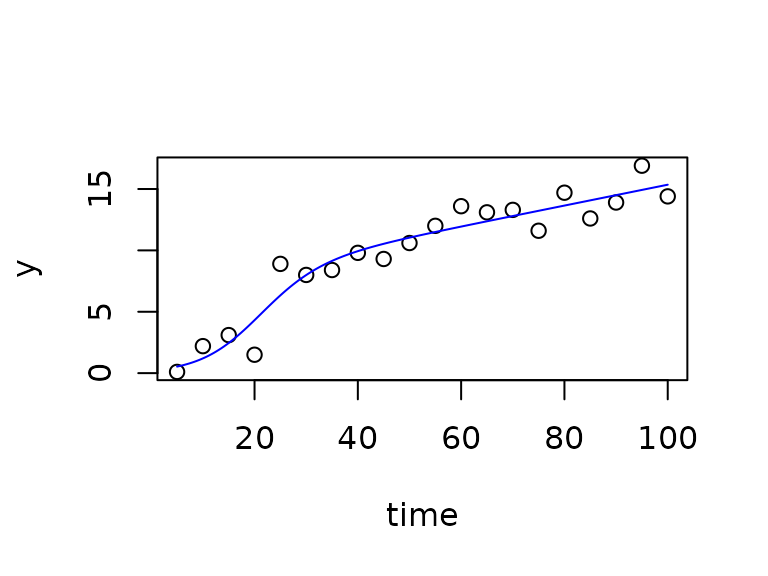

Estimation of Growth Rates with Package `growthrates`, Part 2: User-defined Growth Models
Thomas Petzoldt
2025-08-28
Source:vignettes/User_models.Rmd
User_models.Rmd1. Introduction
Package growthrates comes with a set of pararametric growth models built-in, that should be sufficient for many application scenarios, but of course not under all circumstances. This document describes how the set of available functions can be extended with own user-defined models. Section (3) describes how simple regression functions existing in a closed form can be implemented. In Section (4) we will see how growth models defined by systems of ordinary differential equations (ODE) can be implemented directy in R and finally Section (5) describes how ODE models can be implemented as C inline functions.
2. Differential equations or closed form?
Growth models can be either “ordinary functions” of time in closed form, that a allow to get values for the dependend variable immediately from any given value of an independent variable (or ) without the need of iteration. Or, they can be a differential equation model that needs numerical integration.
Sometimes, a model can be given in either of these forms. As an example, the logistic growth model can be written as a differential equation:
or as its analytical solution in closed form:
We see, that it is much easier to use the second form, because can immediately be calculated from , while for the first version, we would need either calculus (and get the second form as its solution), or we could use a numerical method to simulate the evolution of stepwise over time.
But on the other hand, models given as differential equations are often more directly related to a mechanistic process description and easier to extended.
3. Growth models in closed form
Let’s assume we want to extend the logistic growth model with an additional shift parameter in direction, for example, because a part of the population does not participate growing. This leads to an equation like:
After loading package growthrates:
we can immediately define our own function in the user workspace,
without modifying the package itself. In order to make it compatible
with package growthrates, it is sufficient to streamline the input and
output interfaces in the style described in help page
?growthmodel.
The function can have any valid name, but:
- it must have exactly two arguments time and parms as input and
- its return value (output) must be a matrix with at least 2 columns
with the column names
timeandy.
The inner part of the function can be adapted as necessary, as long as the connection between input and output makes sense from a scientific viewpoint.
grow_logistic_yshift <- function(time, parms) {
with(as.list(parms), {
y <- (K * y0) / (y0 + (K - y0) * exp(-mumax * time)) + y_shift
as.matrix(data.frame(time = time, y = y))
})
}The, at a first look, circumstantial
as.matrix(data.frame(())) construction is just a simple way
to create the required output format.
Then it is of course wise to test the function beforehand, for example:
time <- 1:10
out <- grow_logistic_yshift(time, parms = list(y0 = 1, mumax = 0.5, K = 10, y_shift = 2))
plot(time, out[, "y"], type = "b")Future versions of the growthrates package may introduce additional
checks, so it is already a good idea to convert the function into an
appropriate object of class growthmodel with a so-called
constructor function of the same name:
grow_logistic_yshift <- growthmodel(grow_logistic_yshift,
c("y0", "mumax", "K", "y_shift"))Now the new model is ready to be fitted to test data:
x <- seq(5, 100, 5)
y <- c(2.1, 2.3, 5, 4.7, 4.3, 6.9, 8.2, 11.5, 8.8, 10.2, 14.5, 12.5,
13.6, 12.7, 14.2, 12.5, 13.8, 15.1, 12.7, 14.9)
fit <- fit_growthmodel(grow_logistic_yshift,
p = c(y0 = 1, mumax = 0.1, K = 10, K = 10, y_shift = 1),
time = x, y = y)
plot(fit)
summary(fit)##
## Parameters:
## Estimate Std. Error t value Pr(>|t|)
## y0 0.86510 1.15526 0.749 0.464826
## mumax 0.08134 0.02737 2.972 0.008995 **
## K 12.99885 2.56970 5.059 0.000116 ***
## y_shift 1.04939 2.22481 0.472 0.643528
## ---
## Signif. codes: 0 '***' 0.001 '**' 0.01 '*' 0.05 '.' 0.1 ' ' 1
##
## Residual standard error: 1.248 on 16 degrees of freedom
##
## Parameter correlation:
## y0 mumax K y_shift
## y0 1.0000 -0.9632 0.9555 -0.9477
## mumax -0.9632 1.0000 -0.8989 0.8519
## K 0.9555 -0.8989 1.0000 -0.9766
## y_shift -0.9477 0.8519 -0.9766 1.00004. Differential equation models in R
Differential equation models can be used quite similar to this. It is a little bit more complex because:
- we need two functions. One for the ODE model (the derivatives) and one for the numerical integration.
- the ODE model distinguishes between time dependent state variables and constant parameters, that can both be considered as parameters in a statistical sense. This distinction between statistical parameters (from the viewpoint of model fitting) and ODE model parameters should not be confused.
- the numerical integration itself is a broad field that needs experience and care. A short overview on this topic can be found in Soetaert, Petzoldt, and Setzer (2010).
In the following, let’s assume a model where the carrying capacity is a function of time. This can be modelled with a system of two differential equations, one for the carrying capacity () and another for the population abundance (). For sake of simplicity we assume a linear increase of , but more complex models are of course also possible, e.g. biochemical conversion of a mixed substrate, Monod-dependency from a limited resource, density dependence or a semi-continuos addition of nutrients.
The growth model is built from two parts:
- the function
ode_...with the differential equations, and - the growth model
grow_...calculating the numerical solution.
In the latter, the statistical parameters are splitted into the
initial values for the states (init) and the ODE model
parameters. And, we need to distinguish between the initial (start)
values,
e.g.
and the state variables
that change during simulation.
ode_K_linear <- function (time, init, parms, ...) {
with(as.list(c(parms, init)), {
dy <- mumax * y * (1 - y/K)
dK <- dK
list(c(dy, dK))
})
}
grow_K_linear <- function(time, parms, ...) {
init <- parms[c("y0", "K")] # initial values
names(init) <- c("y", "K") # force names of state variables
odeparms <- parms[c("mumax", "dK")] # the parms of the ODE model
out <- ode(init, time, ode_K_linear, parms = odeparms)
out
}Again, it’s a good idea to test this first:
grow_K_linear <- growthmodel(grow_K_linear,
pnames = c("y0", "K", "mumax", "deltaK"))
head(grow_K_linear(time = 1:10, c(y0 = .1, K = 1, mumax = 0.1, dK = 0.5)))## time y K
## [1,] 1 0.1000000 1.0
## [2,] 2 0.1095851 1.5
## [3,] 3 0.1203149 2.0
## [4,] 4 0.1322238 2.5
## [5,] 5 0.1453939 3.0
## [6,] 6 0.1599322 3.5before we fit the model to data:
x <- seq(5, 100, 5)
y <- c(0.1, 2.2, 3.1, 1.5, 8.9, 8, 8.4, 9.8, 9.3, 10.6, 12, 13.6,
13.1, 13.3, 11.6, 14.7, 12.6, 13.9, 16.9, 14.4)
fit <- fit_growthmodel(grow_K_linear,
p = c(y0 = 0.1, mumax = 0.2, K = 10, dK = .1), time = x, y = y)
plot(fit)
summary(fit)##
## Parameters:
## Estimate Std. Error t value Pr(>|t|)
## y0 0.53286 0.55248 0.964 0.349157
## mumax 0.18124 0.07555 2.399 0.028988 *
## K 7.76895 1.65802 4.686 0.000248 ***
## dK 0.08490 0.02375 3.575 0.002529 **
## ---
## Signif. codes: 0 '***' 0.001 '**' 0.01 '*' 0.05 '.' 0.1 ' ' 1
##
## Residual standard error: 1.442 on 16 degrees of freedom
##
## Parameter correlation:
## y0 mumax K dK
## y0 1.0000 -0.9211 0.5040 -0.3791
## mumax -0.9211 1.0000 -0.6911 0.5596
## K 0.5040 -0.6911 1.0000 -0.9528
## dK -0.3791 0.5596 -0.9528 1.00005. Inline C code with package cOde
A numerical simulation of ODE models can sometimes be slow, so we may be tempted to speed it up. This is indeed possible with compiled code, i.e. the model is written in another programming language (Fortran or C) that are faster compared to R. Several methods exist how this can be done, see for example Soetaert, Petzoldt, and Setzer (2010) or Kneis (2016) and Kneis, Petzoldt, and Berendonk (2017). In the following, we use a method that allows inline code, i.e. direkt integration of C code in the R script using package cOde (Kaschek 2016).
Note, however, that compiled code needs the necessary C (and/or Fortran) compilers and some additional developer tools. These are often installed on Linux systems by default, whereas the Windows toolset available from https://cran.r-project.org/bin/windows/Rtools/ needs an additional installation.
## The following example shows how to use compiled growth models
## from inline code, by using the 'cOde' package of Daniel Kaschek
## Note: This example needs the R development tools.
## - suitable compilers on Linux and Mac
## - Rtools on Windows from https://cran.r-project.org/bin/windows/Rtools/
library("growthrates")
library("cOde")
## define a system of ODEs and compile it --------------------------------------
ode_K_linear <- funC(c(
y = "mumax * y * (1-y/K)",
K = "dK"
))
yini <- c(y = 1, K = 10)
parms = c(mumax = 0.1, dK = 0.05)
## run the model
out1 <- odeC(yini, times = 0:100, ode_K_linear, parms = parms)
## generate artificial test data with normal distributed noise
x <- seq(5, 100, 5)
y <- odeC(yini, x, ode_K_linear, parms)[, "y"] + rnorm(x)
## create a "growthmodel" with interfaces compatible to package growthrates
## It is essential to use consistent names for parameters and initial values!
grow_K_linear <- function(time, parms, ...) {
init <- parms[c("y0", "K")] # initial values
names(init) <- c("y", "K") # force names
out <- odeC(init, time, ode_K_linear, parms)
out
}
## convert this to an object, (maybe needed by future extensions)
grow_K_linear <- growthmodel(grow_K_linear, pnames = c("y0", "mumax", "K", "dK"))
## Test the growthmodel
## Columns with names 'time' and 'y' are mandatory.
head(grow_K_linear(time = x, c(y0 = 1, mumax = 0.1, K = 10, dK = 0.1)))
## Fit the model ---------------------------------------------------------------
fit <- fit_growthmodel(grow_K_linear,
p = c(y0 = 1, mumax = 0.1, K = 10, dK = 0.1), time = x, y = y)
plot(fit)
summary(fit)
## Unload DLL and cleanup ------------------------------------------------------
## DLL creation should ideally be directed to a temporary directory.
dll <- paste(ode_K_linear, .Platform$dynlib.ext, sep = "")
dyn.unload(dll)
unlink(dll)
unlink(paste(ode_K_linear, ".c", sep = ""))
unlink(paste(ode_K_linear, ".o", sep = ""))Acknowledgments
Many thanks to Claudia Seiler for the data set, to David Kneis for fruitful discussions, to Daniel Kaschek for his cOde package, and to the R Core Team (R Core Team 2015) for developing and maintaining R. This documentation was written using knitr (Xie 2014) and rmarkdown (Allaire et al. 2015).
References
Copyright and original author: tpetzoldt, 2025-08-28